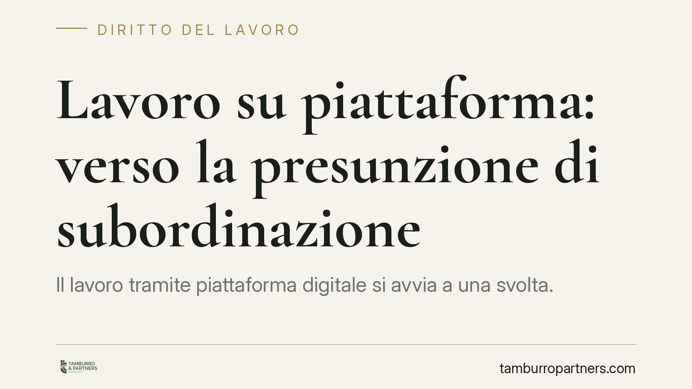

Lavoro su piattaforma: verso la presunzione di subordinazione
Il lavoro tramite piattaforma digitale si avvia a una svolta. La Direttiva UE 2024/2831 introduce una presunzione legale di subordinazione, obblighi di trasparenza sugli algoritmi e supervisione umana sulle decisioni automatizzate. Gli Stati membri, Italia compresa, devono recepirla entro il 2 dicembre 2026. Per le aziende del settore è il momento di prepararsi, prima che il quadro diventi vincolante.

Il quadro in evoluzione
È opportuno chiarire subito un punto: alla data di redazione di questo contributo non risulta approvata una legge italiana organica che riqualifichi in via generale come subordinati i lavoratori delle piattaforme. Il riferimento temporale del 2 dicembre 2026 corrisponde al termine di recepimento della Direttiva (UE) 2024/2831 sul miglioramento delle condizioni di lavoro mediante piattaforme digitali (cosiddetta *Platform Work Directive*), che gli Stati membri devono attuare entro quella data.
Parliamo quindi di un quadro in transizione. Le norme di dettaglio dipenderanno dal decreto di recepimento, il cui contenuto sarà noto solo alla pubblicazione. Invitiamo perciò a verificare l'assetto normativo aggiornato al momento in cui si assumono decisioni gestionali.
Inquadramento normativo
Oggi la materia è retta principalmente da due pilastri.
Il primo è l'art. 2 del D.Lgs. n. 81/2015, che estende la disciplina del lavoro subordinato ai rapporti di collaborazione organizzati dal committente, anche quando le modalità di esecuzione sono determinate tramite piattaforme digitali. Il secondo è il Capo V-bis dello stesso decreto (artt. 47-bis e seguenti), che detta tutele minime per i lavoratori autonomi che effettuano consegne di beni tramite piattaforma (i cosiddetti *rider*): compenso, copertura assicurativa, divieto di discriminazione.
Su questa base si innesta la Direttiva (UE) 2024/2831. Le sue direttrici principali sono tre:
- una presunzione legale di subordinazione, che scatta quando emergono indici di controllo e direzione da parte della piattaforma, con conseguente inversione dell'onere della prova;
- obblighi di trasparenza sui sistemi automatizzati di monitoraggio e decisione;
- l'obbligo di sorveglianza umana sulle decisioni che incidono in modo significativo sui lavoratori.
Sul versante dei dati, la disciplina si salda con l'art. 22 del Regolamento (UE) 2016/679 (GDPR), che tutela l'individuo rispetto alle decisioni basate unicamente su trattamenti automatizzati e riconosce il diritto a un intervento umano.
Implicazioni pratiche
La novità di maggior peso è l'inversione dell'onere della prova. Oggi, in caso di contenzioso, spetta di regola al lavoratore dimostrare gli elementi della subordinazione. Con la presunzione prevista dalla Direttiva, una volta emersi determinati indici, sarà la piattaforma a dover provare l'effettiva autonomia del rapporto.
È un ribaltamento che pesa. Per le aziende del settore le conseguenze potenziali riguardano:
- la contribuzione previdenziale e assicurativa, con oneri sensibilmente diversi tra autonomia e subordinazione;
- il trattamento di fine rapporto (TFR) e gli istituti tipici del lavoro dipendente;
- il rischio di contenziosi seriali, in cui un accertamento favorevole al lavoratore può fare da precedente per posizioni analoghe.
Va però mantenuto un margine di prudenza. La presunzione non equivale a una riqualificazione automatica e definitiva: resta lo spazio per la prova contraria, e sarà la giurisprudenza a definire quali elementi risultino decisivi. Molto dipenderà anche dalle scelte del legislatore italiano in sede di recepimento.
Cosa fare in concreto
- Mappate i rapporti in essere: censite le collaborazioni attive, distinguendo per modalità operative effettive e non per la sola qualificazione contrattuale.
- Verificate gli indici di subordinazione: analizzate turni, geolocalizzazione, sistemi di rating, penalità e vincoli operativi, perché sono questi elementi a far scattare la presunzione.
- Documentate la logica degli algoritmi: predisponete informative chiare sui sistemi automatizzati di assegnazione e valutazione, in coerenza con l'art. 22 GDPR.
- Introducete la supervisione umana: assicuratevi che le decisioni rilevanti (sospensioni, disattivazioni, sanzioni) prevedano un intervento umano tracciabile.
- Monitorate l'iter di recepimento: aggiornate le procedure appena sarà pubblicato il decreto attuativo italiano, senza attendere la scadenza del termine.
Consigliamo di affrontare per tempo l'analisi di conformità, in modo da ridurre l'esposizione a rischi contributivi e contenziosi prima che il nuovo assetto diventi pienamente operativo.
---
*Contributo informativo a cura di Tamburro & Partners – Avv. Giuseppe Tamburro. Non costituisce parere legale. Il quadro normativo è in evoluzione: si raccomanda la verifica delle fonti aggiornate al momento della consultazione.*
Ogni storia di lavoro ha i suoi tempi.
Se gestisci HR e vuoi un confronto su contenzioso, ispezioni o licenziamenti, scrivi allo studio. Ti rispondiamo entro un giorno lavorativo.